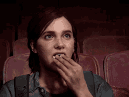

The Last of Us: Amor ou Egoísmo?
data 15/01/2023
Eu comecei a escrever e pensar sobre faltando meses para o lançamento da série, na verdade já queria falar sobre the last of us antes de mostrarem o primeiro trailer, mas nunca cheguei a elaborar algo que representasse o que essa história significa para mim.
Porém agora faltam horas para estreia de série e não queria deixar passar esse momento, então vou falar sobre minhas expectativas para esta que tem a chance de ser a melhor série de 2023.
Olá este é um anuncio!
No momento ainda não temos anuncios disponíveis mas isso não me impede de pedir pra você me seguir no Twitter.
Vale lembrar que não vou contar nada da história dos jogos, que vai ser adaptada para série, até porque a melhor parte dessa história é você ver e sentir todos acontecimentos.
Inclusive a forma como vão adaptar essa história é o que mais me deixa curioso, já que falando de uma forma geral, a história é bem simples, o que faz ela ser excelente são os personagens e como eles são complexos e até mudam conforme a história avança. E é muito importante que você se conecte com os personagens para entender bem todas suas motivações e decisões, o que nos jogos é feito quando você controla o personagem. Controlar o personagem, ouvir e ver suas interações com os cenários e pessoas é uma das coisas que te prende no jogo, e espero que funcione assim na série, já foi mostrado no trailer que os cenários estão incríveis, agora é ver a interação entre os personagens.
Só para fechar, muitos consideram essa história como uma história de amor e esperança, o que eu concordo, mas também fico perdido entre amor e egoísmo e como essa, às vezes, é uma linha muito difícil de enxergar.
Correio intergalatico
Informe seu nome e email, assim sempre que algo novo for postado você recebera um email.Estou super empolgado para ver a série e certamente voltarei a falar dela no futuro.
É isso, espero te encontrar em breve e até lá se cuide, e também lembre se de cuidar dos seus eletrônicos, pois todos sabemos que eles vão cuidar de nós em algum momento do futuro.